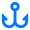
Durable Enclosures
Our hardware is designed to survive the most hostile ocean conditions, deployable on any maritime platform.
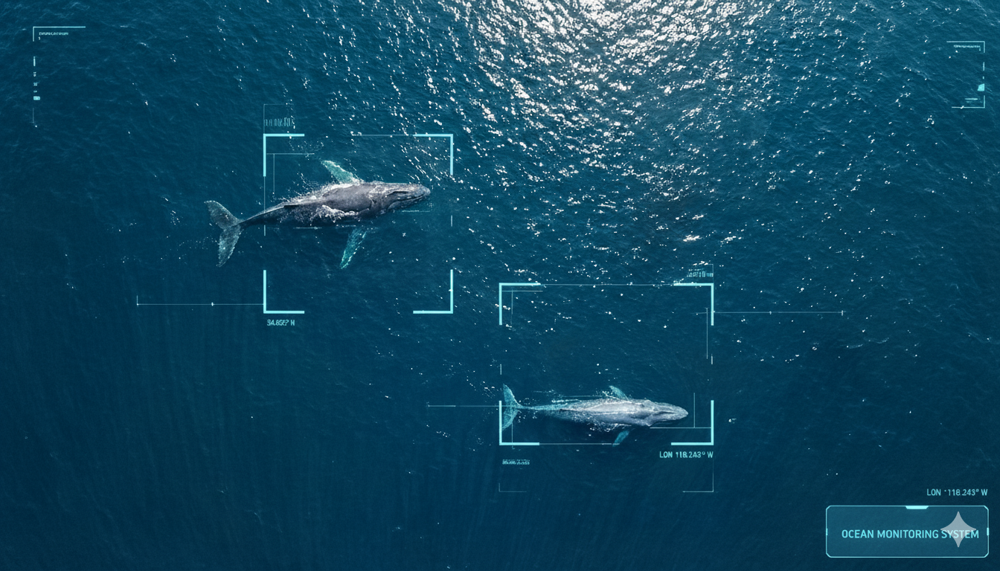
About the Technology
We provide durable enclosures that can be placed on any platform and survive hostile ocean conditions, generating valuable big data in the ocean.

Our hardware is designed to survive the most hostile ocean conditions, deployable on any maritime platform.
Successfully operated deployments in the Atlantic Ocean (October 2025) in collaboration with Noosphera.
We generate massive datasets from ocean environments, enabling unprecedented maritime intelligence.
The Problem
Across science, the judiciary, and defense, agencies on the ground face the same strategic problem: sensing complex, changing environments, automating the capture of facts, and turning fleeting observations into evidence that can be reviewed and acted on.
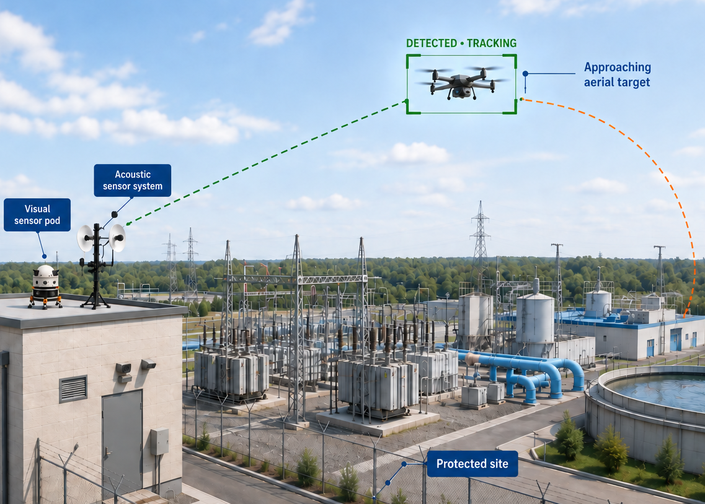
01 / DEFENSE
In the context of modern wars, critical infrastructure is a high-value asset that can be destroyed quickly and easily.
See the approach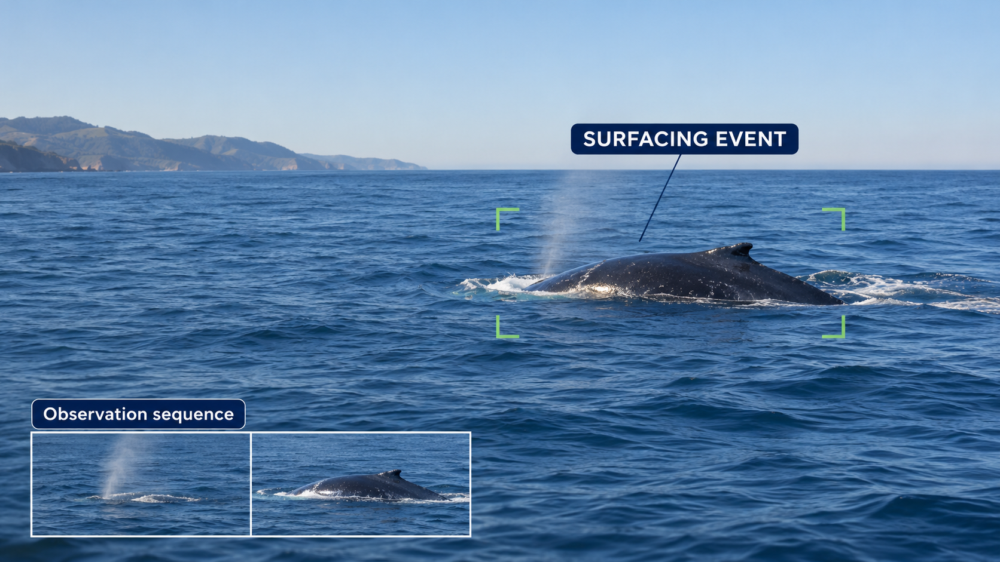
02 / MARINE SCIENCE
Surfacing animals can be brief and difficult to spot. Researchers need repeatable observations they can review and compare.
See the approach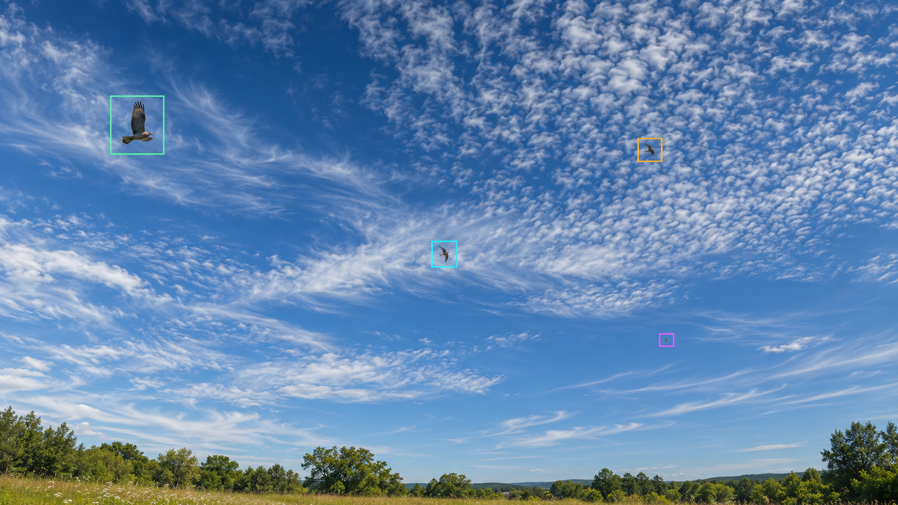
03 / SCIENTIFIC OBSERVATION
Birds and other small moving objects need to be distinguished from background clutter and followed across changing scenes.
See the approach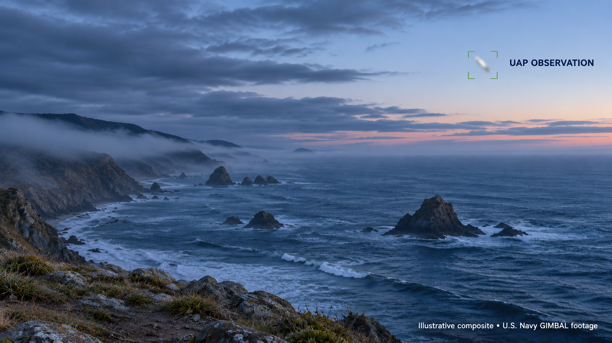
04 / DISCOVERY
Unfamiliar observations need recorded evidence and context before they can be identified or investigated.
See the approach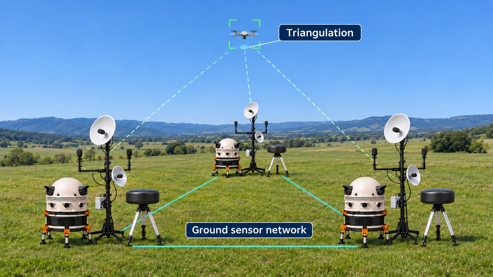
05 / COVERAGE
A single viewpoint covers only part of an environment. Larger areas call for a coordinated network of sensing units.
See the approachThe Solution
Mesh sensors for data collection, detection and tracking, and monitoring — for ground and maritime surveillance.
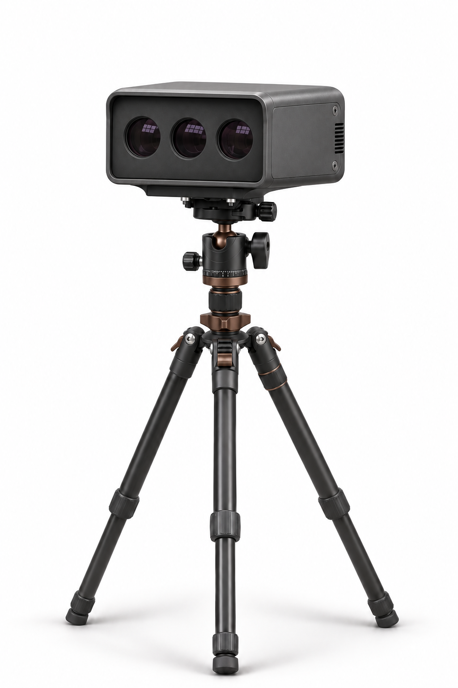
Tier 0 / Focused observation
Optical observation · Jetson edge AI
Jetson-powered optical recording and object detection for a focused observation task, including marine species and scientific fieldwork.
Explore Tier 0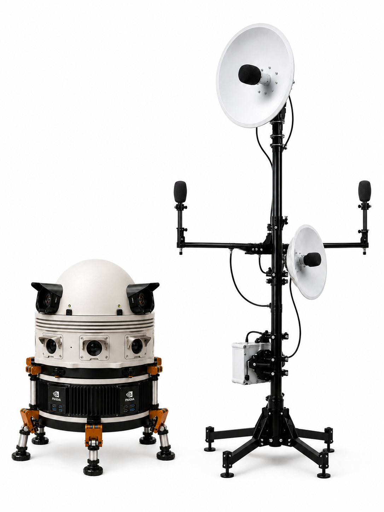
Tier 1 / Site monitoring
More cameras & sensors · No radar
A larger camera and sensor configuration for operational-area coverage, low-light observation, and cross-checking detections. Jetson processing runs onboard.
Explore Tier 1
Tier 2 / With Radar
Visual · Acoustic · Partner radar
Extend the visual–acoustic configuration with partner radar for defense and infrastructure observation, with integration scoped to the site.
Explore Tier 2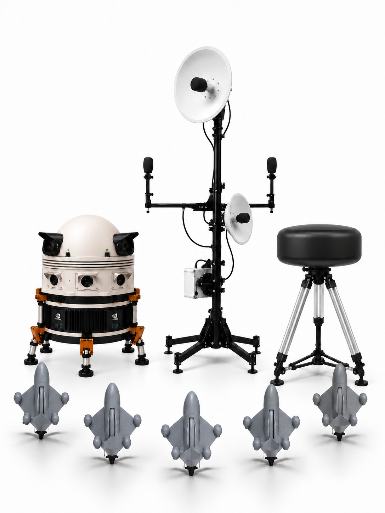
Tier 3 / Partner intercept
Visual · Acoustic · Radar · Partner interceptors
With partner-provided interceptors for defended sites, while SEAQR sensing handles detection, tracking, and the shared operational picture.
Explore Tier 3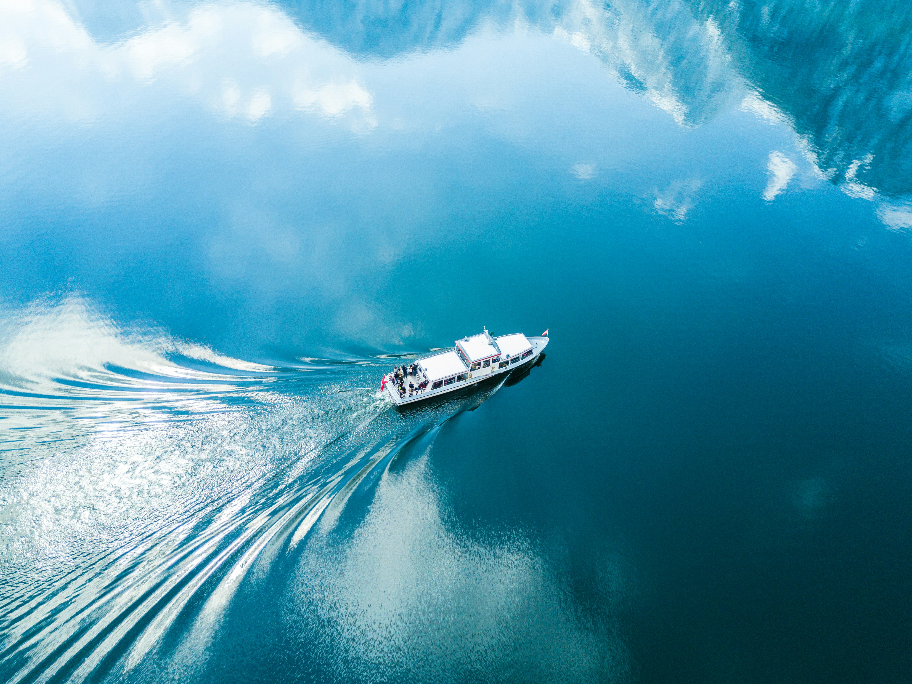
Key Benefits
AI detection of vessels, icebergs, containers, and debris before they become threats.
High-FPS and IR-enabled safe operation in fog, rain, darkness, and extreme conditions.
MOB (Man Overboard) detection and non-cooperative vessel identification capabilities.
Meet regulatory requirements and gain insurance benefits through enhanced safety systems.
Packages
Perfect for individual vessel owners seeking advanced maritime surveillance capabilities.
Designed for multi-vessel operations with centralized control, real-time monitoring, and fleet-wide visibility.
Built for large fleets requiring custom integration and dedicated support.
Partnerships
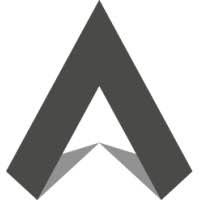
Stealth mode